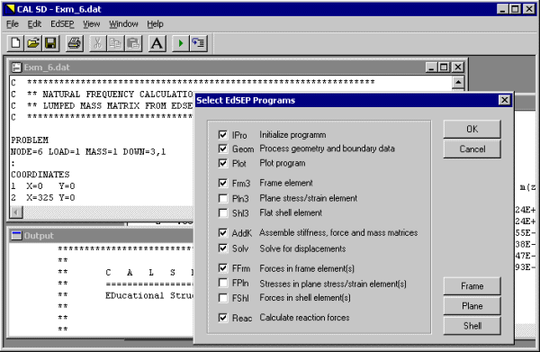

|
|
The CALSD program has been developed at the University of California, San Diego to support teaching and learning of structural engineering concepts and techniques. The program code is based on the Computer Analysis Language CAL, developed by Ed Wilson et al. at the University of California, Berkeley. CALSD provides functionality for three-dimensional linear elastic static and dynamic analysis. The system has been enhanced with a Windows user interface using Visual C++ and the Microsoft Foundation Classes.  |